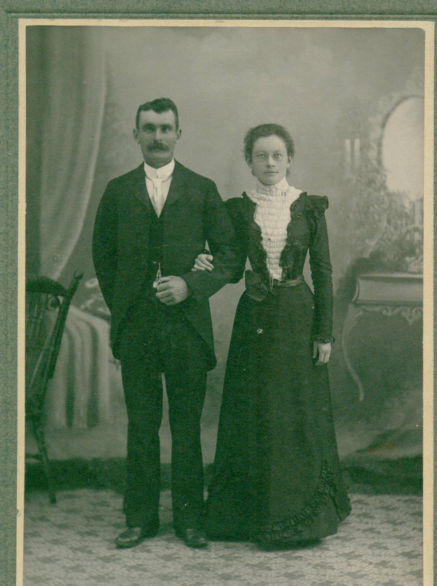

The Family Chronicle
No. 167 December 26, 2008
____________________________________________________________________

Undated photo of John W. and Elspeth (Watling) MacNaughton
Greetings Black River Historians and Genealogists,
Below please find the statistics gathered by Farquhar McRae for the 1834 census in the Parish of Glenelg. As most of you know, Glenelg includes the southern half of Napan as well as Black River and its environs. I believe Don Edge may have circulated some of this data at one time, but I thought I would send the whole document around in case anyone wanted to read it again.
I have been doing some digging on Glenelg Parish (it would have been much easier if Napan was not divided between Glenelg and Chatham parishes) and hope to have some more items of interest for you all in the coming months as I come across them.
Enjoy. Feel free to pass this along.
Barry (MacKenzie)
***********************************
[Beginning of Document]
Form of answer to the Questions contained in the Schedule to an Act of Assembly 5th George IV. intituled, "An Act for
"taking account of the Population of this Province."
[The statistical section below is actually arranged in a chart in the original]
Name and ___ of Parish or City or District, in such Parish or City, and within what County situate.
Parish of Glenelg, County of Northumberland
Inhabited Houses. 129
By how many families occupied. 144 including single men who have hous [sic] and land
Houses now building. 10
Other houses Uninhabited. 10
Whites.
Males above 16 years of age. 323
Males under 16 years of age. 174
Females above 16 years of age. 175
Females under 16 years of age. 163
People of Colour.
Males above 16 years of age. 1**
Males
under 16 years of age.
Females
above 16 years of age.
Females under 16 years of age.
Total of Persons. 836
ATTESTATION, ON OATH, BY THE PERSONS APPOINTED TO TAKE AN ACCOUNT OF THE
POPULATION.
"I, Farq'r McRae, the person appointed to take an account of the Population for the Parish ... of Glenelg
" ... in the County of Northumberland,
"_______ that the above return contains, to the best of my knowledge and belief, a full and true answer to the questions
"contained in the Schedule to an Act, intituled, "An Act for taking acount of the Population of this Province."
The abovementioned Farq'r McRae was sworn this first day of December before me. (signed) Farq'r McRae (signed) Lewis Henry J.P. Justice of the Peace for Northumberland.
[Note] of the above total persons, there is in Timbermaking camps 116; of which there
is 22 from Nova Scotia, 1 from Cape Briton Island, 22 Straglers, 8 from P. E. Island, 8 Amer-icans, 10 Emigrants yet unsettled, and 45 regular inhabitants Of the hoses [sic] unin-habited, there is 4 of the owners living in Chatham, 1 underage, 3 left the County, 2 dead, 1 in another part of the parish, and 2 superannuated.
Of the houses now building, 5 of the owners are single men living in other houses, 3 m__ [men?] of family living with other families, & 2 men of family living in other houses of their own.
[End of Document]
** The one "Person of Colour" listed in these statistics reminds me of the stories of "Old Tom Miller" and a slave belonging to the Traers. Alexander MacKnight once claimed that Tom Miller lived in Napan on the farm of the Mitchells. Alexander noted that the spot where Tom Miller was drowned in the Napan River during the fire of 1825 is known as Miller's Cove. He also noted that the Traer slave was burned alive in his cabin and was buried on the present day farm of MacK Jardine. Can anyone confirm either of these stories? Source: "Harold W. J. Adams, "A look back at some of the history of Napan" Miramichi Leader, 6 August 1996, Section C, Page 11, col.1 and 2.
Note from the Editor
On a number of occasions, I wondered in a
Family Chronicle about the origin of “Miller’s Brook or Miller’s Bridge. (between my old home and the Little Branch School). This arises again because of the reference to “Old Tom Miller” in the above article.
Was there, in fact, a Tom Miller?
If so, instead of living in Napan, did he live in Black River?
Did he live in one place for a while and then move to another?
Was the ancestor of Alexander MacKnight mentioned in Barry,s note related to the MacKnights of Black River and, therefore, Miller could have lived in Black River?
Other McKnight connections to Black River include the marriage of George Smith Fowlie to Jane MacKnight and the marriage of John K. MacKenzie to Annie MacKnight – and I am sure there are others.
Is it possible that Miller was a squatter on the land that , in 1912, was granted to Alexander MacDonald?
I look forward to your comments.
The Family Chronicle (Copyright) is an occasional newsletter published by Don Glendenning and posted on the family website. It is intended to share information about my family, community and the times in which I grew up. While every effort is made to be accurate, errors are likely to occur. Comments, enquiries and information may be sent to 62 Queen Elizabeth Drive, Charlottetown, PEI, C1A 3A9. Tel: 902 892 5859. Email: don@glendenning.net Web: www.glendenning.net/don